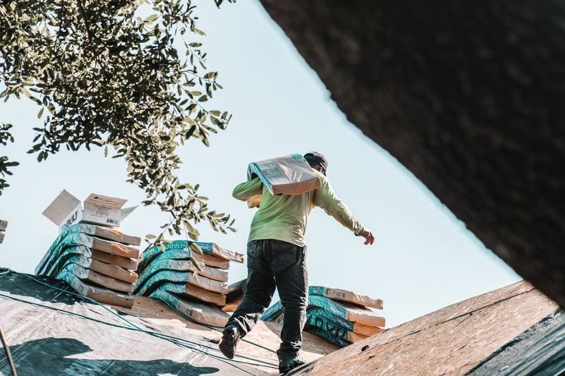
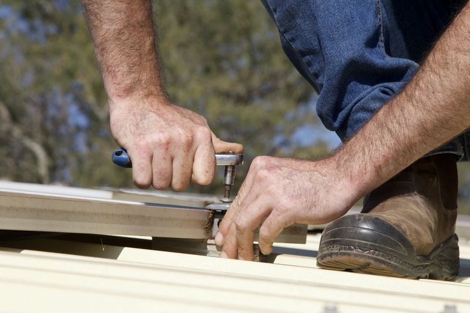
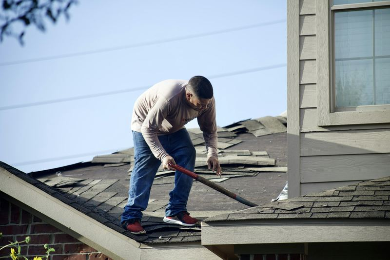

Pokrývačské práce
Nové střechy i výměna krytiny. Tašky, plech i šindel, včetně latí a fólie.
Zadejte rozměry domu a sklon. Spočítáme přibližnou plochu sedlové střechy, ať víte, o čem se bavíme.
147 m² střechy
Počítáme s přesahem 50 cm na každé straně. Vikýře a komíny upřesníme na místě.
Poptat střechuOd drobné opravy po střechu na klíč.

Nové střechy i výměna krytiny. Tašky, plech i šindel, včetně latí a fólie.

Okapy, svody, oplechování komínů, atik a parapetů.

Zatéká? Najdu, kudy, a opravím to. Izolace plochých střech.
„Profesionální práce, vřele doporučuji.“
zákazník na Firmy.cz